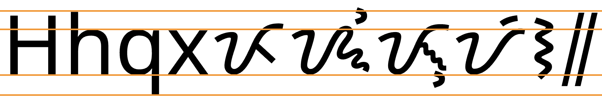

This page brings together basic information about the Tagbanwa script and its use for the Aborlan Tagbanwa language. It aims to provide a brief, descriptive summary of the modern, printed orthography and typographic features, and to advise how to write Tagbanwa using Unicode.
Note: Given the difficulty in finding term lists in written in the Tagbanwa orthography, the examples cited here were derived manually by applying the rules of the orthography to Latin transcriptions. Tagbanwa is a simple enough script that these should be reliable, however two assumptions were made: (1) that r is written using the same letter as d, and (2) that the sound ɨ is written using the same letter as i.
Sample
Select part of this sample text to show a list of characters, with links to more details.
Change size:
44px
Source: Tagbanwa alphabet ... with some reforms ... proposed .. by Romuáldez, Norberto.
Usage & history
Origins of the Tagbanwa script, 18thC – today.
Phoenician
└ Aramaic
└ Brahmi
└ Pallava
└ Kawi
└ Baybayin
└ Tagbanwa
+ Baybayin
+ Buhid
+ Hanunó'o
+ Kulitan
+ Balinese
+ Batak
+ Javanese
+ Lontara
+ Sundanese
+ Rencong
+ Rejang
+ Bima
+ Makasar
The Tagbanwa language is spoken by around 17,000e Palawans in the Philippines. Related dialects include Calamian (2,000 speakers) and Central Tagbanwa (10,000 speakers).
The Tagbanwa script is currently endangered, and authorities in the area where it is spoken are trying to encourage its use by the younger generation.
ᝦᝪᝯ
When the Spaniards arrived in the Philippines in the 1500s they were surprised to find that the inhabitants were largely literate in scripts of which Tagbanwa is one survivor. The scripts have the characteristics of Brahmi-derived scripts, but the pathway that led to this orthography is not clear. It is thought that it may lead via Java and have arrived in the Philippines between the 10th and 14th centuries.me
The Tagbanwa script is an abugida. Consonants carry an inherent vowel which can be modified by appending vowel signs to the consonant. See the table to the right for a brief overview of features for the modern Tagbanwa orthography.
Tagbanwa text runs left-to-left in horizontal lines, and is unicameral.
Tagbanwa has 13 consonant letters, but they are only used to indicate syllable onsets. Syllable codas are not written. This can lead to some word ambiguity, and also means also that the text doesn't indicate any consonant clusters.
The Tagbanwa orthography is an abugida with one inherent vowel, pronounced a. Other vowels are written using only 2 vowel signs (for 3 sounds), and no consonants.
Tagbanwa has 3 independent vowels, used for vowels that are preceded by a glottal stop. These may occur word-initially or word-medially.
Character index
Letters
Show
Consonants
ᝩ␣ᝪ␣ᝦ␣ᝧ␣ᝣ␣ᝤ␣ᝰ␣ᝫ␣ᝨ␣ᝥ␣ᝯ␣ᝮ␣ᝬ
Vowels
ᝠ␣ᝡ␣ᝢ
Combining marks
Show
Vowels
ᝲ␣ᝳ
Punctuation
Show᜵␣᜶
Items to show in lists
Phonology
The following represents the repertoire of the Aborlan Tagbanwa language.
Click on the sounds to reveal locations in this document where they are mentioned.
Phones in a lighter colour are non-native or allophones. Source Wikipedia.
Vowel sounds
Plain vowels
Consonant sounds
labial
dental
alveolar
palatal
velar
glottal
stop
pb
td
kɡ
ʔ
fricative
s
h
nasal
m
n
ŋ
approximant
w
l
j
trill/flap
ɾ~r
Tone
Tagbanwa is not a tonal language.
Structure
Tagbanwa syllable types include:
CV | CVC
Vowels
Vowel summary
ⓘ represents the inherent vowel. The left column shows dependent vowels, and the right independent.
a following a consonant is not written, but is seen as an inherent part of the consonant letter, so ka is written by simply using the consonant letter.
Combining marks used for vowels
ᝣᝲ
kiU+1763 LETTER KA + U+1772 VOWEL SIGN I
Tagbanwa uses only two combining marks for vowels when it is necessary to override the inherent vowel.
ᝲ␣ᝳ
1772 represents one of 2 sounds: i or ɨ.
Unlike Buhid and Hanunóo, there is no context-dependent shaping when a consonant carries a vowel sign. 1772 sits above the base letter, and 1773 sits below, with no change in shape.
Standalone vowels
ᝠ
aU+1760 LETTER A
ᝠ␣ᝡ␣ᝢ
Vowels at the beginning of a word or following another vowel are actually transcribed in IPA with a preceding glottal stop (ʔ), but they are written using one of 3 independent vowel letters.
As with the vowel signs, these letters each represent one of two possible sounds. (See the box above.)
ᝠᝧᝳ
ᝡᝨᝳ
ᝡᝨᝲ
ᝢᝧ
Vowel sounds to characters
This section maps Tagbanwa vowel sounds to common graphemes in the Tagbanwa orthography.
The left column shows dependent vowels; the right column shows independent vowel letters.
Sounds listed as 'infrequent' are allophones, or sounds used for foreign words, etc.
Plain vowels
i
1772
ᝦᝲᝮᝳ
1761
ᝡᝨᝳ
ɨ
1772
ᝧᝲᝣᝲᝬᝲ
1761
ᝡᝨᝲ
u
1773
ᝣᝬᝳ
1762
ᝢᝧ
e
1772
ᝧᝲᝢ
a
Inherent vowel
ᝠᝪᝤ
1760
ᝠᝧᝳ
Consonants
Basic consonants
Tagbanwa consonants are few and simple. There is no repertoire extension mechanism.
ᝩ␣ᝪ␣ᝦ␣ᝧ␣ᝣ␣ᝤ␣ ␣ᝰ␣ ␣ᝫ␣ᝨ␣ᝥ␣ ␣ᝯ␣ᝮ␣ᝬ
1767 is used to write both d and r. The sound r is often an allophonic variant of d that occurs between vowels.
Onsets
Tagbanwa syllable onsets are straightforward. They don't involve consonant clusters.
Finals
Like some other neighouring scripts, the syllable codas are not written in the Tagbanwa orthography. This, of course, can lead to a certain amount of ambiguity. Examples:
ᝡᝮ
ᝢᝮᝳ
Consonant clusters
Tagbanwa has no conjuncts or other special mechanisms for handling consonant cluster, which only occur normally when a syllable with a code precedes a syllable with a consonant onset.
Consonant sounds to characters
This section maps Tagbanwa consonant sounds to common graphemes in the Tagbanwa orthography.
Syllable-final consonants are never written. The right-hand column shows the shape alone, combined with vowel sign I, and combined with vowel sign U, respectively.
Click on a grapheme to find other mentions on this page (links appear at the bottom of the page). Click on the character name to see examples and for detailed descriptions of the character(s) shown.
Sounds listed as 'infrequent' are allophones, or sounds used for foreign words, etc.
Stops
p
1769
ᝩᝨ
ᝩ ᝩᝲ ᝩᝳ
b
176A
ᝪᝪ
ᝪ ᝪᝲ ᝪᝳ
t
1766
ᝦᝢ
ᝦ ᝦᝲ ᝦᝳ
d
1767
ᝧᝤ
ᝧ ᝧᝲ ᝧᝳ
k
1763
ᝣᝤ
ᝣ ᝣᝲ ᝣᝳ
ɡ
1764
ᝤᝫᝳ
ᝤ ᝤᝲ ᝤᝳ
Fricatives
s
1770
ᝰᝣᝲ
ᝰ ᝰᝲ ᝰᝳ
Nasals
m
176B
ᝫᝩ
ᝫ ᝫᝲ ᝫᝳ
n
1768
ᝨᝫᝳ
ᝨ ᝨᝲ ᝨᝳ
ŋ
1765
ᝥᝧ
ᝥ ᝥᝲ ᝥᝳ
Other sonorants
w
176F
ᝯᝯ
ᝯ ᝯᝲ ᝯᝳ
r
1767
ᝧᝲᝪᝳ
ᝧ ᝧᝲ ᝧᝳ
l
176E
ᝮᝤᝲ
ᝮ ᝮᝲ ᝮᝳ
j
176C
ᝠᝬ
ᝬ ᝬᝲ ᝬᝳ
Numbers
The Tagbanwa Unicode block doesn't have a set of native digits.
Text direction
Tagbanwa text runs left to right in horizontal lines.
Eversonme reports that the writing often runs bottom to top on lines that progress from left to right. However, the letter glyphs are rotated in this case, so this is simply a rotation of the medium, rather than a different writing direction. It makes it easier to fit the writing on bamboo strips.
The majority of the 16 Tagbanwa letters are variants of a small number of basic shapes, as shown in fig_basic_shapes.
ᝠ␣ᝡ␣ᝩ␣ᝫ␣ᝬ␣ᝰ␣ᝮᝨ␣ᝤᝧ␣ᝯᝥ␣ᝦTagbanwa letters arranged to show similarities in shape.
Context-based shaping & positioning
Tagbanwa letters don't interact with each other, and in the Noto font the placement of the vowel signs involves no context-sensitive placement. The shape of the vowel signs doesn't vary according to the base consonant, unlike Buhid and Hanunóo.
Tagbanwa has no multiple combining marks, or other shaping to consider.
Letterform slopes, weights, & italics
tbd
Since it is very hard to find any printed examples of Tagbanwa text, it is likely that there is no standard approach to the use of oblique and bold forms, if they are used at all. The Noto Tagbanwa font has only a regular face.
Typographic units
Word boundaries
Words are separated by spaces.
Graphemes
Tagbanwa is a simple orthography and typographic units can be easily segmented using grapheme clusters.
Phrase, sentence, and section delimiters are described in phrase.
Grapheme clusters
Base Combining_mark*
Tagbanwa typographic units consist of a letter or a letter with a single combining mark (one of two vowel signs). Both of these units fit the definition of a grapheme cluster.
As previously noted, syllable codas are not written in Tagbanwa text, and so the segmentation only captures onsets and the syllable nucleus.
Punctuation & inline features
Phrase & section boundaries
᜵␣᜶
Tagbanwa uses ᜵ for a short pause, and ᜶ for a longer or sentence-like pause. It may also be used at the end of a poem.
phrase
᜵
sentence
᜶
Line & paragraph layout
Line breaking & hyphenation
The primary line-break opportunity occurs at word boundaries.
Line-edge rules
As in almost all writing systems, certain punctuation characters should not appear at the end or the start of a line. The Unicode line-break properties help applications decide whether a character should appear at the start or end of a line.
Tagbanwa uses the so-called 'alphabetic' baseline, which is the same as for Latin and many other scripts.
Tagbanwa letters vary slightly in height but are mostly around the same, with no ascenders or descenders. Vowel signs may appear above or below some letters, but these are small.
To give an approximate idea, fig_baselines compares Latin and Tagbanwa glyphs from the Noto Sans font. The basic height of Tagbanwa letters is typically around the Latin x-height, however some taller letters and combining marks can reach just beyond the Latin ascenders (but not the descenders), creating a need for very slightly larger line spacing.

Font metrics for Latin text compared with Tagbanwa glyphs in the Noto Sans Tagbanwa font.